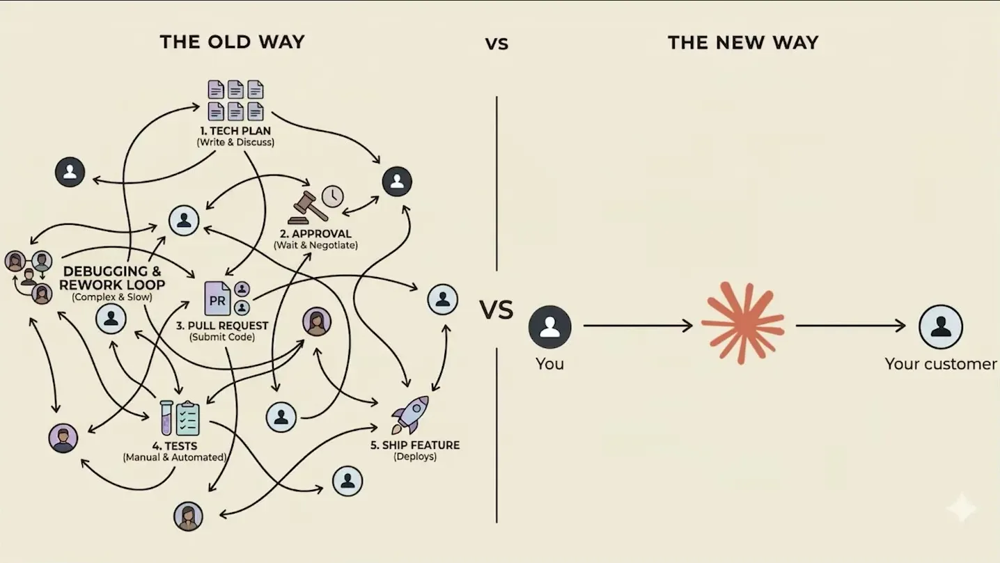
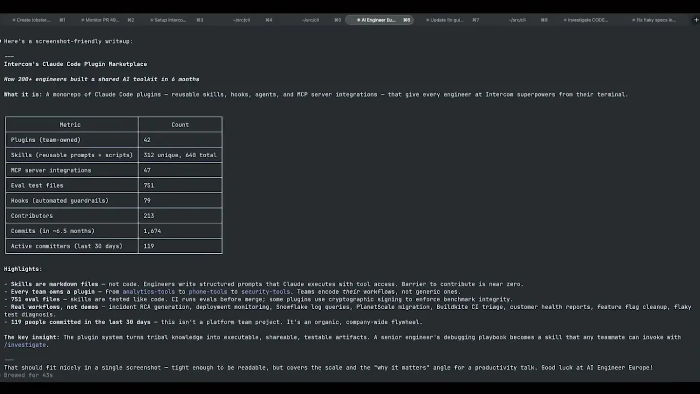
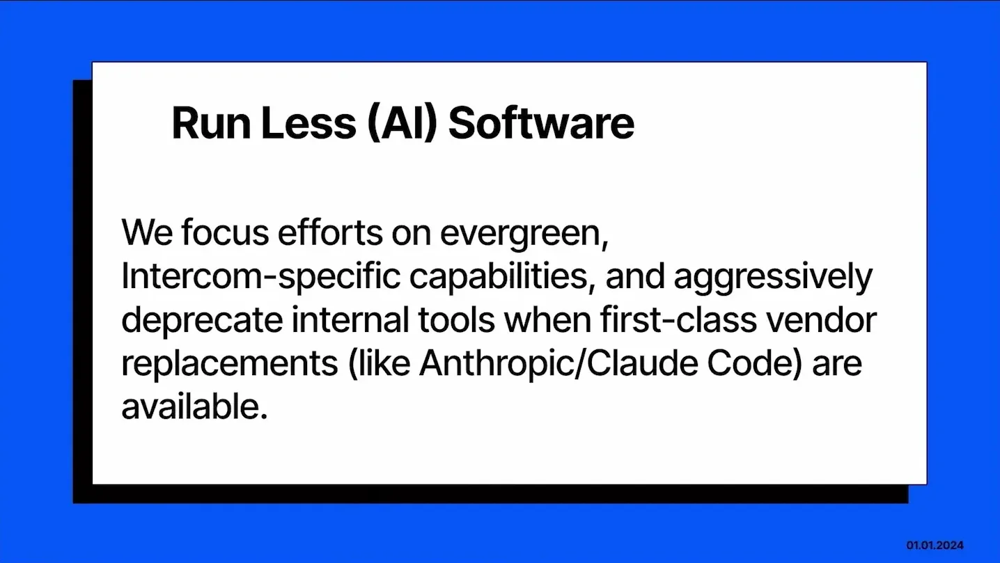
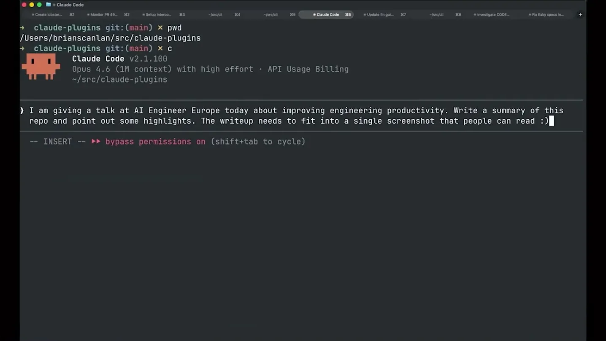
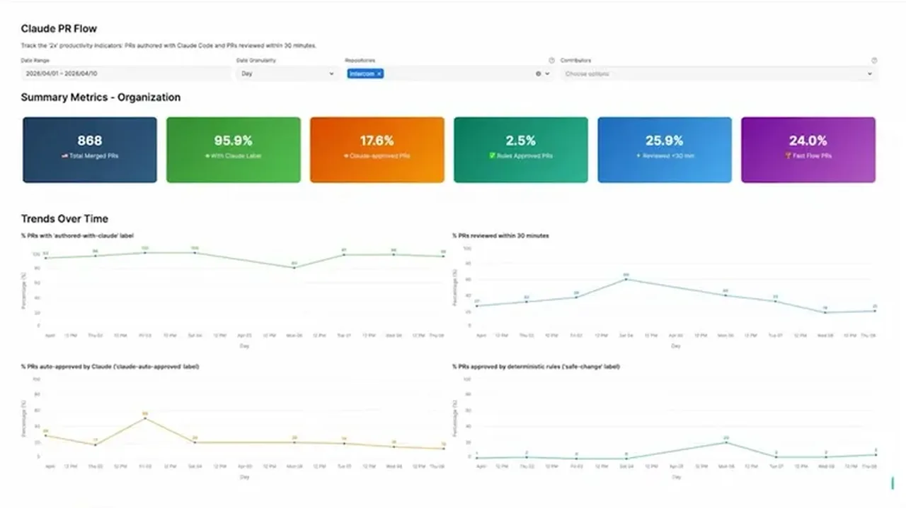
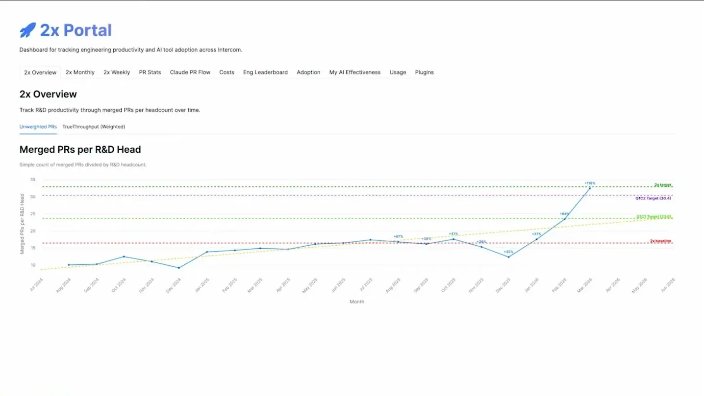
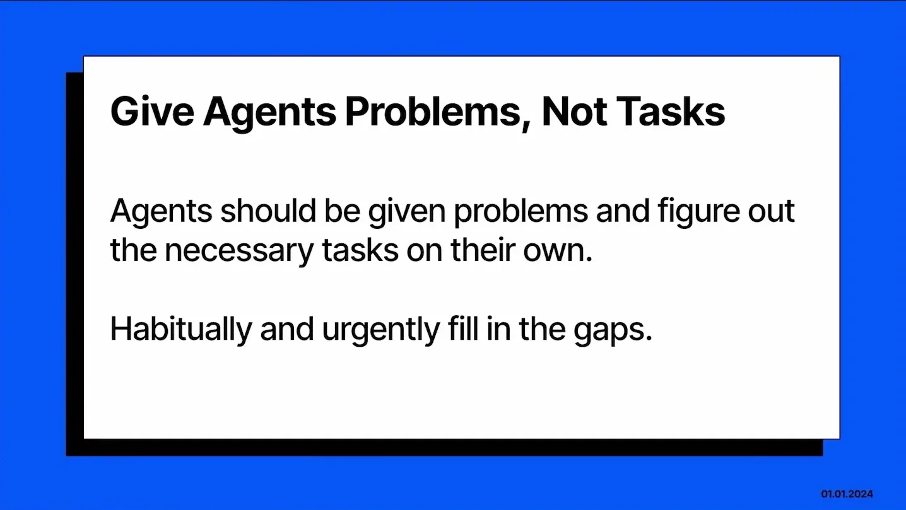

How Building with AI Can Double the Throughput of Your Engineering Team
Intercom describes its 2x program end to end: single Claude Code platform, code-changes-per-R&D metric, skill library, and backtested auto-approval clearing 17.6% of PRs with SOC 2/ISO/HIPAA sign-off.
If you only read one thing
- Intercom set a goal in mid-2025 to double engineering throughput, chose code changes per R&D person as the primary metric, and standardized on Claude Code as the single agent platform rather than spreading across tools.
- They reached doubled PR throughput in under a year, and now auto-approve 17.6% of pull requests through an agent-based review suite (including Codex) built on backtested confidence scoring, verified with auditors as compatible with SOC 2, ISO 27001, and HIPAA without humans in the loop.
- Their working model is to give agents problems, not tasks, and let internal skills self-invoke; a real example is a security-incident skill that auto-triaged a public data exposure in about 2 minutes without being explicitly told to use it.
The slide numbers (skill counts, hook counts, PR percentages) are as shown on stage; the exact wiring between hooks, Honeycomb, and the approval suite's confidence scoring is our inference from the talk, not stated step by step (ours).
Why this talk is a blueprint, not a take (ours)
Scope: A company-wide engineering productivity program at one B2B SaaS company (about 1,400 people, R&D led from Dublin), covering code authoring, review, and approval; not a description of Finn, Intercom's separate customer-support product.
A single-platform operating model where a skill library, automated hooks, and a backtested confidence-scoring reviewer let engineers state problems instead of naming tasks, with 17.6% of PRs auto-approved and doubled PR throughput per R&D head reached in under a year, all reportedly still SOC 2, ISO 27001, and HIPAA compliant.
Prerequisites the talk implies:
- Executive-level commitment to standardize on one agent platform rather than let teams pick tools individually
- A dedicated, full-time platform team (called '2x' here) to build and maintain skills, hooks, and guidance rather than leaving adoption to individual engineers
- An existing corpus of production code, incidents, and defects to backtest confidence scoring against before trusting any auto-approval
- Auditor sign-off confirming your specific compliance regime (the talk names SOC 2, ISO 27001, HIPAA) does not require a human in the loop
- A conventions and guidance corpus (architecture patterns, testing standards, security rules) written down well enough for an agent to follow
What the talk does not say:
- No comparison of the 17.6% auto-approval error rate against human-reviewer error rates, so it is not possible to judge from the talk whether agent approval is safer, only that it was accepted by auditors
- No cost figures for the dedicated 2x team, Claude Code usage, or the infrastructure (Honeycomb, S3 session storage) behind the telemetry loop
- No detail on how confidence thresholds for auto-approval were set or how often they are revisited
- No number for how many of the 42 team-owned plugins or 751 eval test files shown on the plugin-marketplace slide were built before versus after the 2x program started
If you were to replicate one thing first: Pick one agent platform for all engineering work company-wide, staff a small dedicated team to own its guidance and skills full time, and start measuring one throughput metric (Intercom used code changes per R&D person) before attempting any auto-approval.
| Component | What it does (from the talk) | Evidence | Slide |
|---|---|---|---|
| Claude Code (single platform) | Standardized as the one agent platform all of R&D uses, instead of letting engineers pick their own tools | c3 · 07:47 |  |
| Intercom engineering guidance | Human-curated, Intercom-specific conventions (Rails patterns, testing standards, security rules) that feed code generation and review | c5 · 12:24 | |
| Skill library | 312 unique reusable skills (448 total incl. per-team copies) that Claude self-invokes based on the stated problem, not a named command | c5 · 13:26 |  |
| Hooks | Automated guardrails and telemetry taps; the talk describes hooks publishing skill-invocation events for org-wide visibility | c12 · 17:34 |  |
| Codex code reviewer | Runs alongside Claude in the review suite for multimodal code review, feeding the auto-approval decision | c8 · 17:03 |  |
| Auto-approval suite | Backtested, human-labeled confidence scoring that clears simple, safe pull requests without a human reviewer, 17.6% of PRs at the time of the talk | c8 · 16:33 |  |
| 2x Portal | Internal dashboard tracking merged PRs per R&D head, percent of PRs authored with Claude, review turnaround, and auto-approval rate over time | c7 · 16:02 |  |
| Security-incident skill | Pre-written skill encoding the data-breach response policy; ran unprompted, downloaded files, completed analysis, and reported next steps in about 2 minutes | c6 · 14:29 |  |
Company context: Finn
- Intercom's customer-support AI agent Finn has over 8,000 customers, launched the day GPT-4 came out, and Intercom recently began serving 100% of Finn's English text conversations on their own model.
“Our agent our AI agent for customer support, Finn, has over 8,000 customers, industry-leading average resolution rates, revenues like approaching 100 million, launched the day GPT-4 came out, first product actually released on GPT-4”
said at 01:35Setting the 2x goal and metric
- In mid-2025, Intercom set a goal to double engineering throughput without doubling team size, naming the initiative '2x.' Despite running many developer surveys and tools like DX, they picked code changes per R&D person as the primary productivity metric.
“we picked code changes per R&D person as the primary way we're measuring productivity”
said at 04:11One platform, full scope
- After testing GitHub Copilot, Cursor, and Augment, Intercom chose to standardize on Claude Code as a single platform rather than let engineers pick tools, reasoning that a well-designed platform's compounding benefits are lost if work is spread across providers.
- Their stated vision was to connect Claude to everything an engineer does on their laptop, extending its scope beyond code production to debugging, testing, and planning.
“you don't get the compounding benefits of a well-designed platform if you're sending all your different work across different cloud providers or whatever”
said at 07:47“our vision here was like connect Cloud to everything. So anything I do on my laptop, Cloud should be able to do this”
said at 08:18Working method: problems, not tasks
- Intercom coaches engineers to describe problems and let the agent figure out which skill to invoke, rather than naming a specific skill to run.
- The speaker recounts a security incident where he simply asked Claude Code to look into an accidentally published Snowflake table; it found and used an existing internal skill encoding their data-breach policy, completed a full analysis, and reported next steps.
“another thing we guide people to do is like you want to give problems agents not tasks”
said at 13:26“Claude just automatically downloaded the files, did full analysis, concluded it was innocuous, told me all next steps”
said at 14:29Measured results
- Intercom reached doubled PR throughput in under a year after standardizing on the platform in December and rolling it out in January.
- Their automatic PR approval system, built using backtesting and human-labeled confidence scoring, now approves 17.6% of pull requests, and Intercom confirmed with auditors that no human-in-the-loop is required to remain SOC 2, ISO 27001, and HIPAA compliant.
“we have reached the doubling PR throughput in faster than 1 year”
said at 16:02“this like 17.6% uh approval rate of our automatic code approval and it's like a lot more in-depth than just like hey Claude, can you approve this”
said at 16:33“we've also worked with our auditors to ensure that we're fully SOC 2, ISO 27001, HIPAA compliant, all that. You do not need humans in the loop to to meet these certifications”
said at 17:03Commentary (ours)
The auto-approval figure (17.6%) is presented without a comparison baseline for human reviewer error rates, so it's not possible from the talk alone to judge whether agent approval is actually safer than human review, only that Intercom's auditors accepted the control structure around it (ours).

Underlying detail — every claim, typed and timestamped (10)
| Stance | Claim | t |
|---|---|---|
| asserts | Intercom's Finn support agent has over 8,000 customers and launched the day GPT-4 came out. | 01:35 |
| asserts | Intercom picked code changes per R&D person as its primary metric for engineering productivity. | 04:11 |
| recommends | Spreading work across multiple agent platforms forfeits the compounding benefits of a well-designed single platform. | 07:47 |
| asserts | Intercom's stated vision is for Claude to be able to do anything an engineer does on their laptop. | 08:18 |
| recommends | Intercom guides engineers to give agents problems to solve rather than naming a specific task or skill to run. | 13:26 |
| asserts | Claude automatically found and used an internal data-breach-response skill without being told it existed, completing full analysis in about 2 minutes. | 14:29 |
| asserts | Intercom reached doubled PR throughput in under a year after standardizing on the agent platform. | 16:02 |
| asserts | Intercom's automatic code-approval system, built using backtesting and human-labeled confidence scoring, approves 17.6% of pull requests. | 16:33 |
| asserts | Intercom's auditors confirmed no human-in-the-loop is required to remain SOC 2, ISO 27001, and HIPAA compliant, given proper auditing controls. | 17:03 |
| asserts | Skill invocations are tracked through hooks piped into Honeycomb, giving org-wide visibility into which skills are used and where. | 17:34 |
Machine-readable copy embedded in this page (script#ontology) and in the corpus ontology.